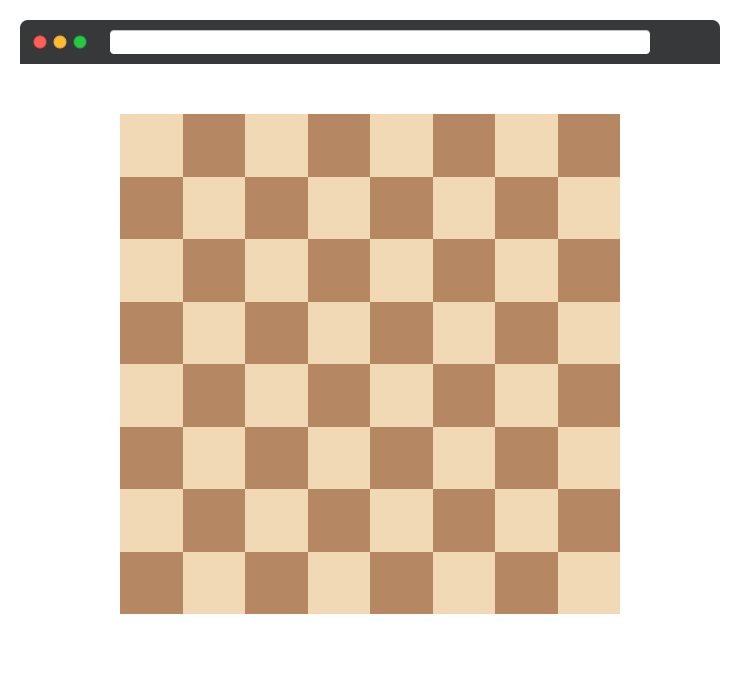

В этом задании, используя изученные псевдоклассы, вам предстоит создать поля шахматной доски

Вёрстка и основные стили шахматной доски уже доступны в соответствующих файлах.
Осталось только покрасить необходимые клетки в светлый цвет #f1d9b5